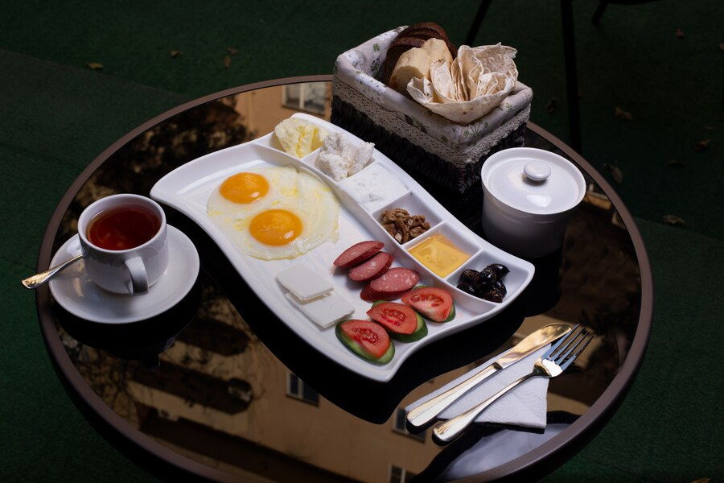
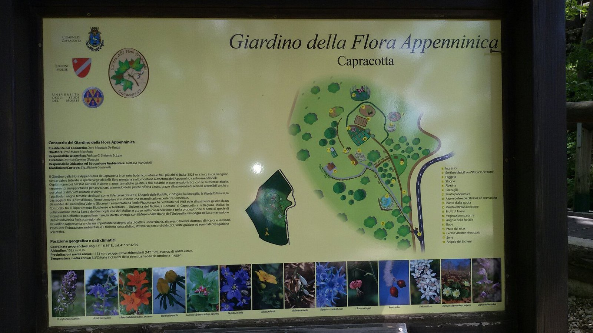
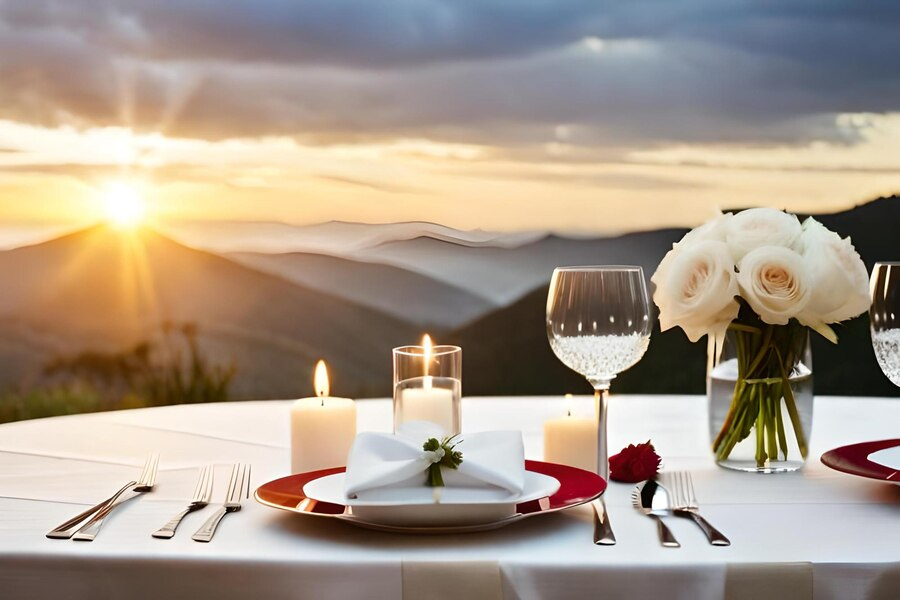

|  |
PACCHETTO COLAZIONE DELUXE: |
Ecco una colazione completa, che da la giusta carica per affrontare la giornata completa. |
|  |
TOUR GUIDATO DALLA CITTA': |
Il Giardino è un orto botanico naturale, in cui vengono conservate e tutelate le specie vegetali della flora autoctona dell'Appennino centro-meridionale.
Grazie alle diverse caratteristiche del morfologiche, ospita numerosi habitat naturali, dal palustre al rupicolo, dalla faggeta alle praterie.
|
 |
MASSAGGIO RILASSANTE: |
Le manovre del massaggio rilassante prevedono movimenti brevi e circolari ed è richiesta una maggior pressione per favorire la circolazione.
Hanno lo scopo di lenire il dolore muscolare e articolare, localizzato soprattutto nella zona della schiena e nelle spalle.
Le tecniche utilizzate sono appositamente studiate per promuovere il rilassamento profondo.
|
|  |
CENA ROMANTICA: |
La nostra terrazza panoramica con vista sulle montagne è il posto ideale per rilassarsi durante la cena romantica con la tua partner. |